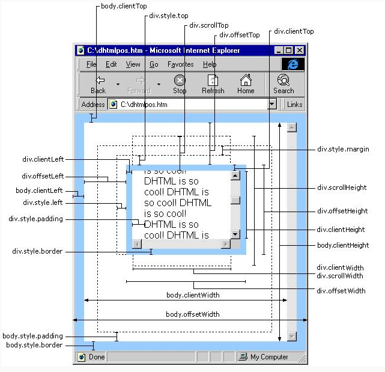

剑指前端（前端入门笔记系列）——DOM（元素大小）原文出处:本文由博客园博主AI-fisher提供。
原文连接:https://www.cnblogs.com/AI-fisher/p/11178130.html
DOM中没有规定如何确定页面中与元素的大小，IE率先映入了一些属性来确定页面中元素的大小，以便开发人员使用，目前，所有主要的浏览器都已经支持这些属性了。
1.偏移量（单位为像素）
首先介绍的属性涉及偏移量，包括元素在屏幕上占用的所有可见的空间。元素的可见大小由其高度、宽度决定，包括所有内边距、滚动条和边框大小（注意，不包括外边距）。通过以下4个属性可以取得元素的偏移量。
offsetParent：获取元素的最近的具有定位属性（absolute或者relative）的父级元素。如果都没有则返回body
offsetHeight：元素在垂直方向上占用的空间大小。包括元素的高度、（可见的）水平滚动条的高度、上边框高度和下边框高度。
offsetWidth：元素在水平方向上占用的空间大小。包括元素的宽度、（可见的）垂直滚动条的宽度、左边框宽度号右边框宽度。
offsetLeft：元素的左外边框至父元素的左内边框之间的像素距离。
offsetTop：元素的上外边框至父元素的上内边框之间的像素距离。
当然，要想知道某个元素在整个页面上的偏移量，将该元素及其所有祖先元素的offsetLeft和offsetTop对应相加，直至根元素，就可以得到结果，下面是相对于页面的offsetLeft值（offsetTop获取方式一样）：
<style type="text/css">
*{margin:0;padding:0;}
#fu{width:100px;height:100px;background:red;margin:100px;padding:20px;}
#fu .zi{width:20px;height:20px;background:black;}
</style>
<div id="fu">
<div class="zi"></div>
</div>
<script type="text/javascript">
var oZi = document.querySelector(".zi");
function getElementLeft(element){
var elementLeft = element.offsetLeft;
var fu = element.offsetParent;
while(fu != null){
elementLeft += fu.offsetLeft;
fu = fu.offsetParent;
}
return elementLeft;
}
console.log("offsetLeft值为：" + getElementLeft(oZi) + "px");
</script>
【注】所有偏移量属性都是只读的，而且每次访问它们都需要重新计算。因此，应该尽量避免重复访问这些属性；如果需要重复使用某些属性的值，可以将它们保存在局部变量中，以提高性能。
2.客户区大小（单位为像素）
元素的客户区大小，指的是元素内容及其内边距所占据的空间大小。有关客户区大小的属性有两个：clientWidth和clientHeight。
clientWidth：元素内容区宽度加上左右内边距宽度
clientHeight：元素内容区高度加上上下内边距高度
从字面上看，客户区大小就是元素内部的空间大小，因此滚动条占用的空间不计算在内，最常用到这些属性的情况就是：确定浏览器视口大小的时候，要确定浏览器视口大小，可以使用document.documentElement或document.body的clientWidth和clientHeight。
【注】与偏移量相似，客户区大小也是只读的，也是每次访问都要重新计算的。
3.滚动大小（单位为像素）
滚动大小指的是包含滚动内容的元素的大小。有些元素（例如<html>元素），即使没有执行任何代码也能自动的添加滚动条：但另外一些元素，则需要通过CSS的overflow属性进行设置才能滚动。以下4个与滚动大小相关的属性。
scrollHeight：元素内容的实际总高度
scrollWidth：元素内容实际总宽度
scrollLeft：被隐藏的内容区域左侧的像素数。通过设置这个属性可以改变元素的滚动的位置
scrollTop：被隐藏的内容区域上方的像素数。通过设置这个属性可以改变元素的滚动位置
scrollWidth和scrollHeight主要用于确定元素内容的实际大小，scrollLeft/scrollTop：滚动条最顶端和窗口中可见内容的最顶端之间的距离。所以，带有垂直滚动条的页面总高度就是document.documentElement.scrollHeight
在确定文档的总高度时（包括基于视口的最小高度时），必须取得scrollWidth/clientWidth和scrollHeight/clientHeight中的最大值，才能保证在跨浏览器的环境下得到精确的结果，比如：
var docHeight = Math.max(document.documentElement.scrollHeight,document.documentElement.clientHeight);
var docWidth = Math.max(document.documentElement.scrollWidth,document.documentElement.clientWidth);
通过scrollLeft和scrollTop属性既可以确定元素当前滚动状态，也可以设置元素的滚动位置。在元素尚未滚动时，这两个属性的值都等于0.
总览图：
